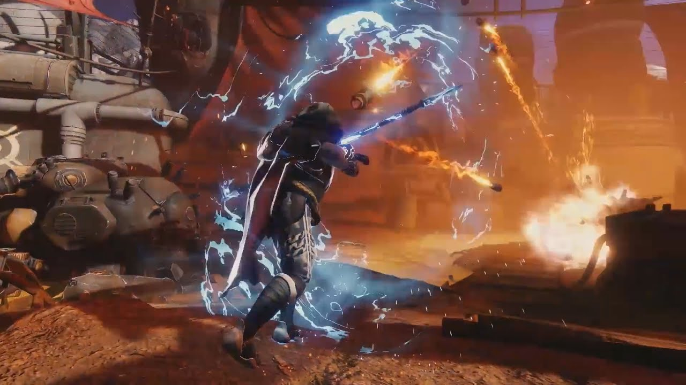
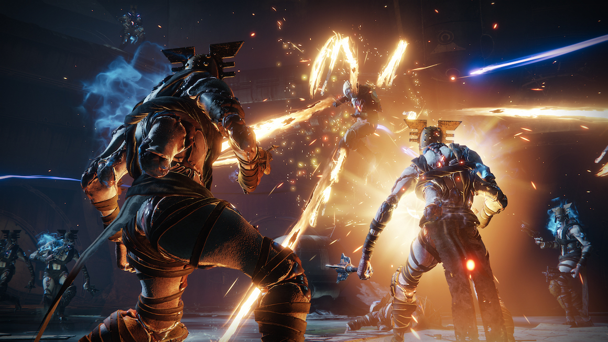

Hunter
Hunters are the most agile of Destiny's class triad, sacrificing resilience and recovery for the ability to move quickly. Much like its Titan and Warlock brethren, the Hunter class is divided into three subclasses at present; each specialization offers unique abilities and alters the manner in which hunters can use their jump, grenades, or dodge. Shared among all subclasses is the Dodge class ability; this technique is further divided into Gambler's Dodge and Marksman's Dodge, allowing players to either recharge melee abilities or reload weapons while skillfully evading incoming attacks.
In the Destiny 2 base game, hunters start with the Arc element subclass of Arcstrider. They gain the ability to unlock the Solar element subclass, Gunslinger, at level 8 and the Void element subclass, Nightstalker, at level 15.
Destiny 2: Forsaken gives each of the three character classes three new supers for each of their subclasses, which are tied to a brand new third subclass branch. The first of new subclass can be unlocked simply by playing through the Forsaken campaign. After the first mission is completed, enemies will drop feather-like objects caled Visions of Light. Once enough are collected, a special mission is unlocked on Io that rewards you with a Seed of Light that can be used to unlock one of the subclasses. You start out with just the super ability and unlock the melee ability and passives by dealing ability damage to enemies. The second seed of light can be obtained from completing the Tier 2 or above version of the Blind Well activity, and the third seed of light can be received by completing the first raid encounter of the Last Wish raid or giving an offering to the Oracle on the third week of the Dreaming City curse cycle.
 Nightstalker: Way of the Wraith
Melee - Corrosive Smoke: The Nightstalker’s smoke bomb fires in a line from where it explodes, slowing enemies and dealing damage.
Perk - Flawless Execution: Precision kills while at full health let Nightstalkers turn invisible. They also gain truesight, an ability that allows players to see through walls.
Perk - Shattering Strike: Meleeing an enemy while invisible will debuff them, causing them to deal less damage for a short time.
Super - Spectral Blades: The Nightstalker super is Spectral Blades, which turns the Hunter invisible and lets them sneak around to stab their enemies in the back.
Nightstalker: Way of the Wraith
Melee - Corrosive Smoke: The Nightstalker’s smoke bomb fires in a line from where it explodes, slowing enemies and dealing damage.
Perk - Flawless Execution: Precision kills while at full health let Nightstalkers turn invisible. They also gain truesight, an ability that allows players to see through walls.
Perk - Shattering Strike: Meleeing an enemy while invisible will debuff them, causing them to deal less damage for a short time.
Super - Spectral Blades: The Nightstalker super is Spectral Blades, which turns the Hunter invisible and lets them sneak around to stab their enemies in the back.
 Arcstrider: Way of the Current Melee - Tempest Strike: The Arcstrider’s melee ability is activated by sliding before attacking. It causes the Hunter to use their staff to deal melee damage in an electric uppercut strike that sends electricity out in a line. Perk - Lightning Weave: Melee hits let you reload more quickly. Perk - Ebb and Flow: Hitting an enemy with arc abilities will electrify them. Using melee on electrified enemies will disorient them and recharge your abilities. Super - Whirling Guard: The super is Whirling Guard, which grants the Arcstrider the new ability to spin their staff and reflect projectiles back at their foes — including bullets. After reflecting, the Arcstaff’s damage will be amplified by three times.
 Gunslinger: Way of a Thousand Cuts Melee - Knife Trick: The Gunslinger’s melee ability throws out a fan of knives instead of just a single blade. This spread shot will also light enemies on fire. Perk - Playing with Fire: Killing enemies who are on fire steadily recharges the Hunter’s melee ability. Perk - The Burning Edge: When enemies burn, it causes the dodge ability to recharge. Super - Blade Barrage: The super is Blade Barrage, which allows the player to toss a bunch of explosive knives at their foes. This works like a tracking shot. The knives will lock onto and fire toward any targets you can see. If the Hunter is only aiming at one enemy, it may only throw one, big knife barrage that deals more damage — versus the many, smaller knives against a group.